G30SPKI
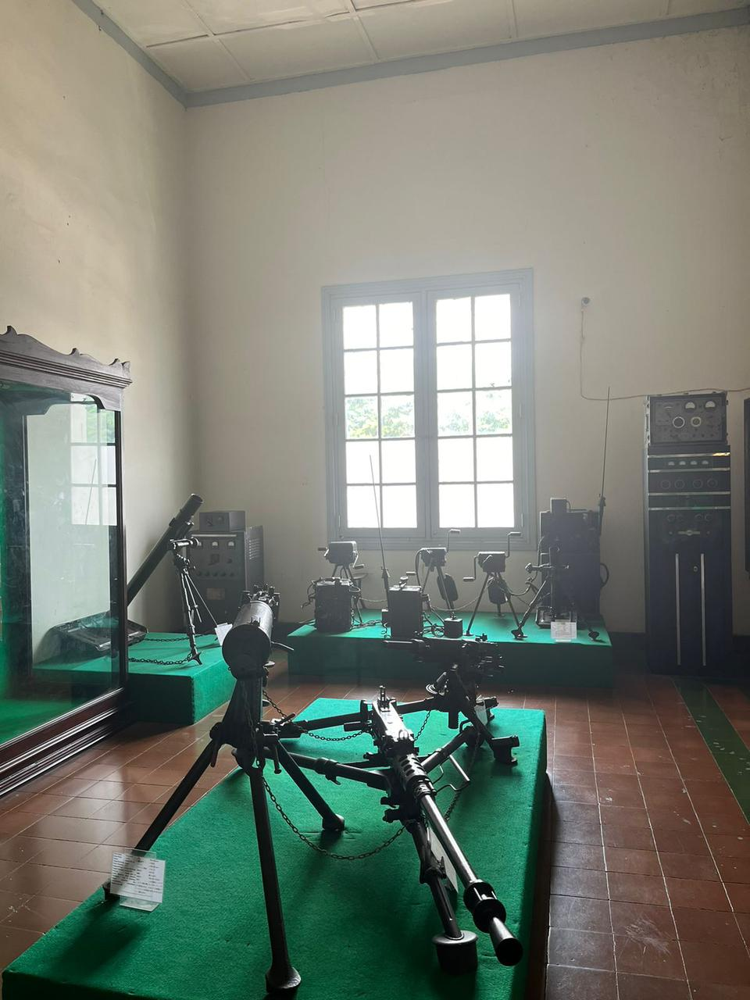 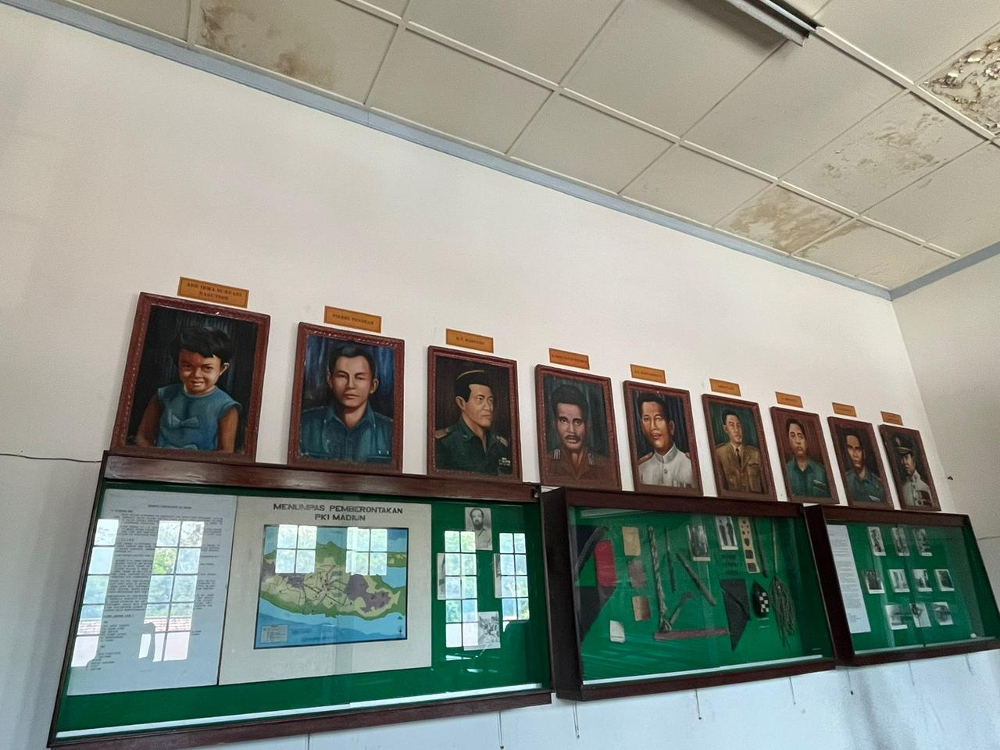 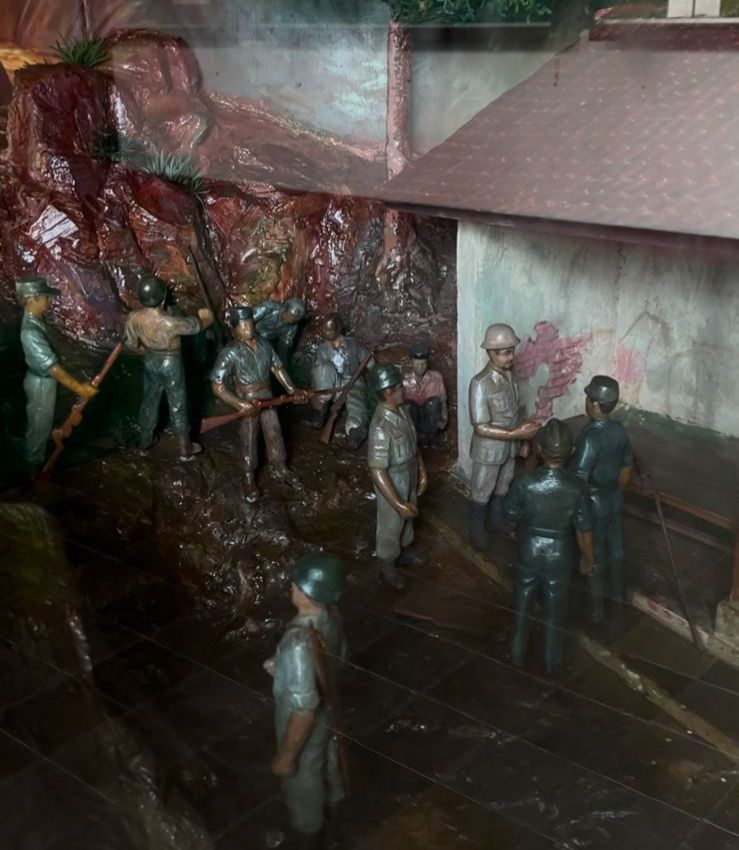G30SPKI adalah kudeta yang terjadi selama satu malam pada tanggal 30 September hingga 1 Oktober 1965 yang mengakibatkan gugurnya enam jenderal serta satu orang perwira pertama militer Indonesia dan jenazahnya dimasukkan ke dalam suatu lubang sumur lama di area Lubang Buaya, Jakarta Timur.
Presiden Soeharto menyebutnya dengan istilah GESTAPU (Gerakan September Tiga Puluh), dan pada Orde Baru, Presiden Soeharto mengubah sebutannya menjadi G30S/PKI (Gerakan 30 September PKI) dan terdapat istilah "Gestok" yang lebih sering terdengar adalah bentuk singkatan dari Gerakan Satu Oktober, yang merujuk pada gerakan yang diprakarsai oleh PKI dengan tujuan menggulingkan pemerintahan.
Barang Peninggalan
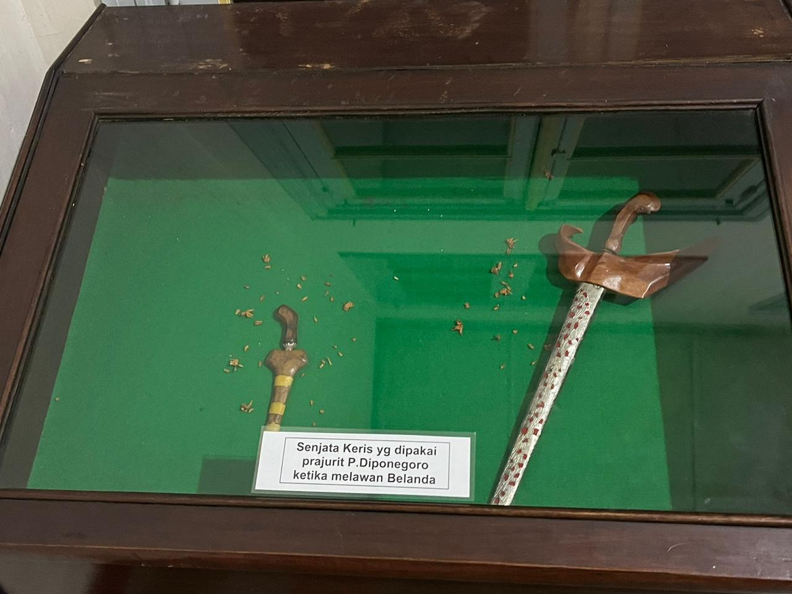 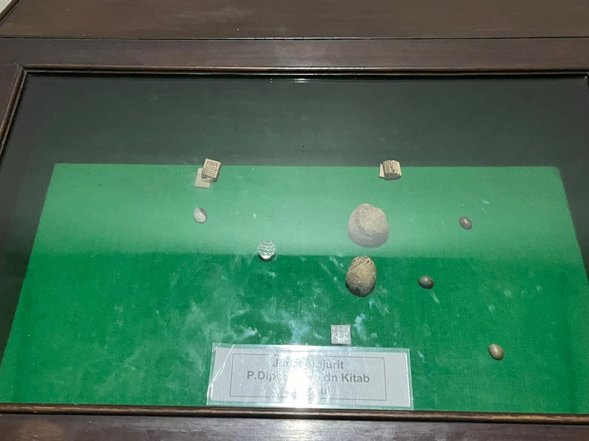 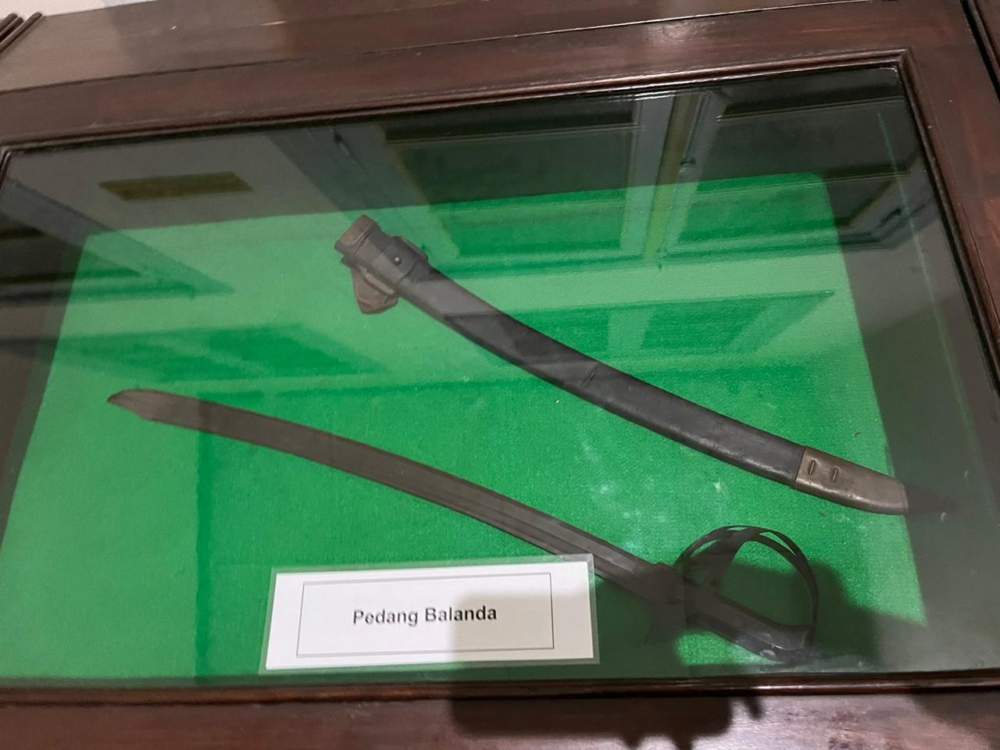 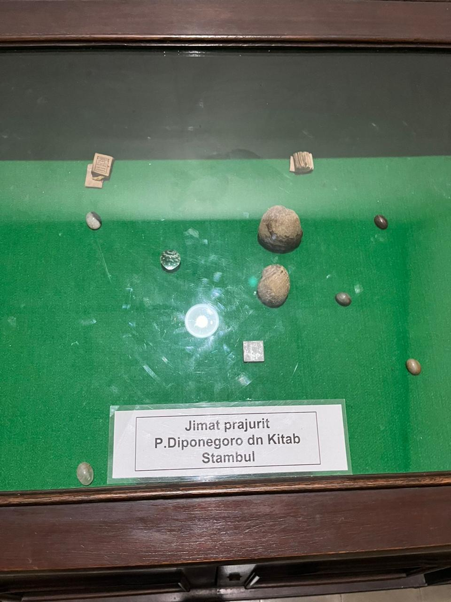 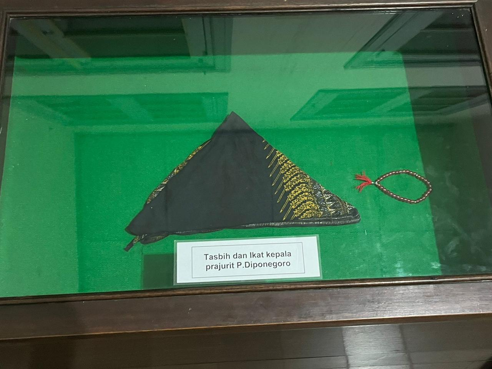
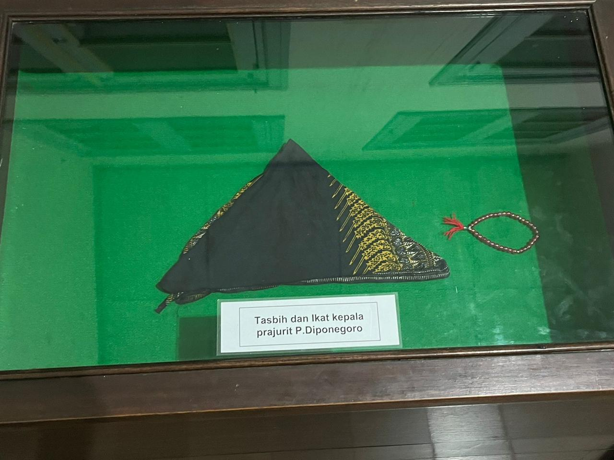
Museum Mandala Bhakti menyajikan beragam peninggalan bersejarah yang mencerminkan perjalanan panjang bangsa Indonesia dalam berbagai aspek kehidupan, termasuk perjuangan kemerdekaan, perkembangan budaya, dan kemajuan teknologi. Di dalamnya, pengunjung akan menemukan koleksi yang menggugah hati, seperti foto-foto bersejarah, peralatan bersejarah, hingga berbagai benda yang digunakan oleh tokoh-tokoh penting dalam sejarah Indonesia.
Salah satu daya tarik utama dari museum ini adalah koleksi peninggalan yang berkaitan dengan sejarah perjuangan. Di samping itu, terdapat pula benda-benda yang merekam kisah kepahlawanan dan semangat juang para pejuang kemerdekaan, yang memperlihatkan perjuangan tanpa lelah demi Indonesia yang merdeka.
Alat Medis
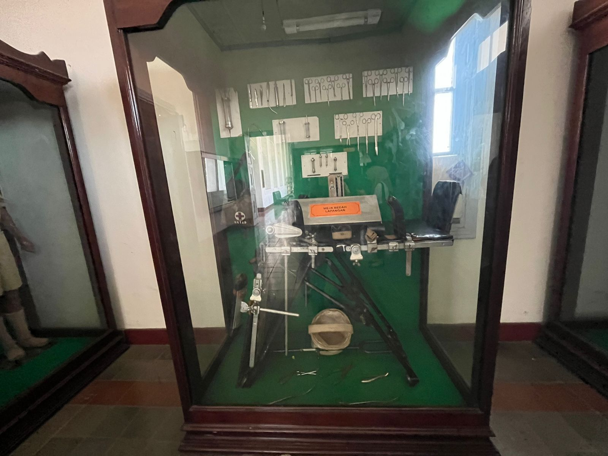 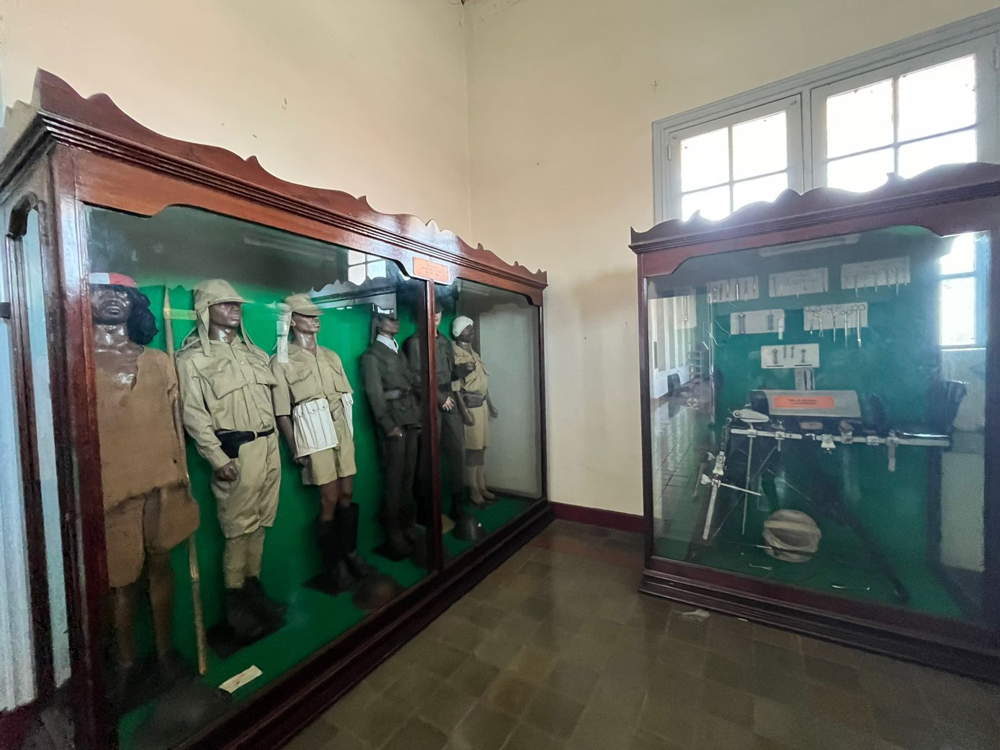 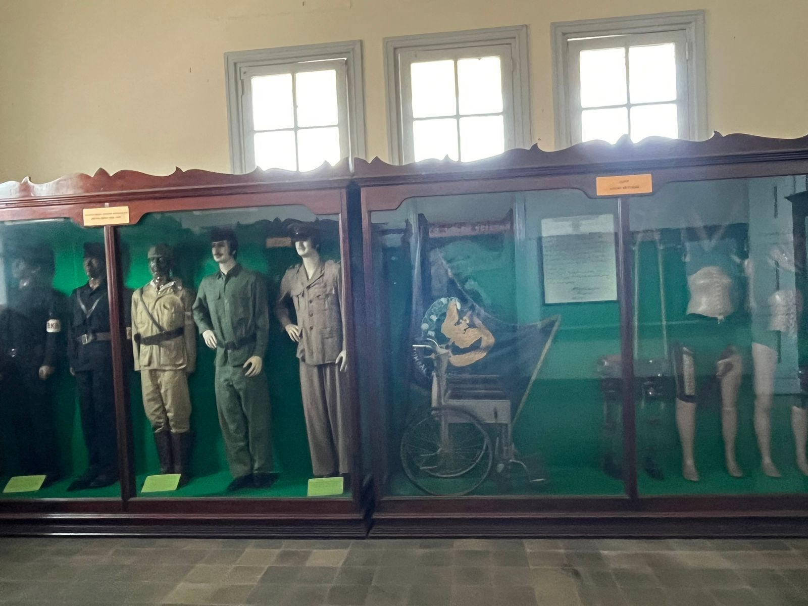 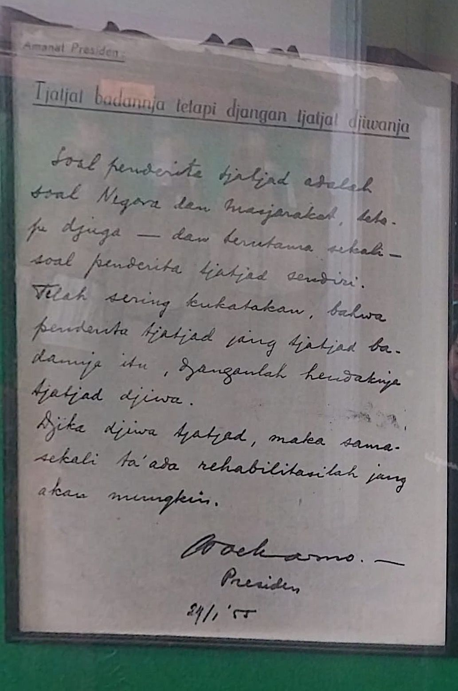Museum Mandala Bhakti menyimpan berbagai peninggalan berharga yang mencerminkan perjalanan sejarah dunia medis di Indonesia. Salah satunya adalah koleksi alat medis tradisional yang digunakan oleh tenaga kesehatan pada masa lampau. Di antara koleksi tersebut, terdapat berbagai peralatan seperti alat bedah kuno, stetoskop pertama, serta instrumen yang digunakan untuk diagnosis dan pengobatan pada zaman dahulu.
Terdapat juga pidato dari Presiden Soekarno yang mengatakan “Tjatjat badanja tetapi djangan tjatjat djiwanja” yang mengganbarkan bahwa lebih baik sakit fisik dan janganlah sakit jiwa nya. Peninggalan ini juga menunjukkan dedikasi para tenaga medis pada masa itu dalam upaya merawat dan menyembuhkan pasien, meskipun dengan keterbatasan teknologi yang ada. Dengan mengunjungi koleksi ini, pengunjung dapat lebih memahami sejarah panjang dunia kedokteran di Indonesia, serta peran penting yang dimainkan oleh alat medis dalam membantu penyembuhan dan meningkatkan kualitas hidup masyarakat.